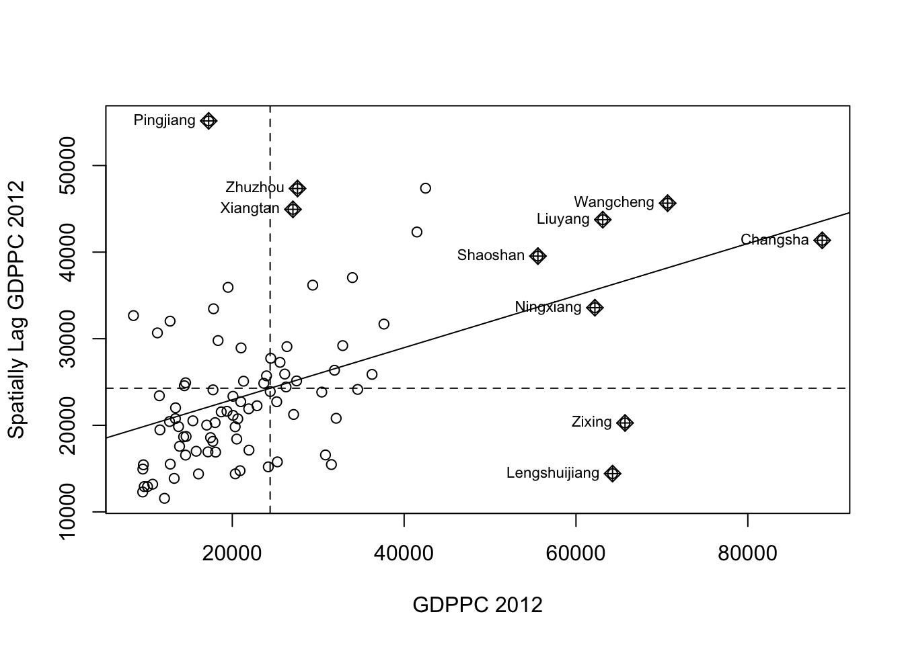
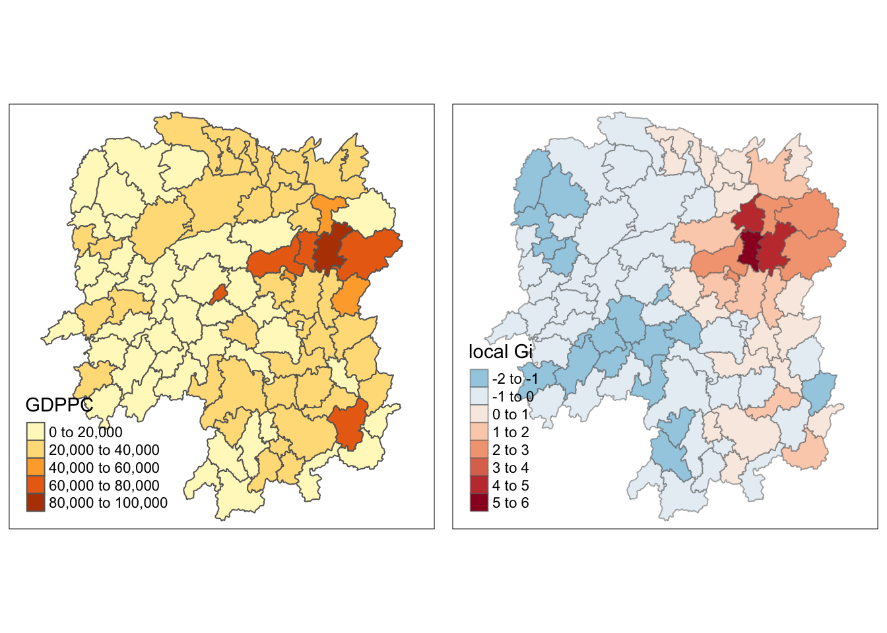

Click to view code
pacman::p_load(sf, spdep, tmap, tidyverse)Local Measures of Spatial Autocorrelation (LMSA) focus on the relationships between each observation and its surroundings, rather than providing a single summary of these relationships across the map. In this sense, they are not summary statistics but scores that allow us to learn more about the spatial structure in our data. The general intuition behind the metrics however is similar to that of global ones. Some of them are even mathematically connected, where the global version can be decomposed into a collection of local ones. One such example are Local Indicators of Spatial Association (LISA). Beside LISA, Getis-Ord’s Gi-statistics will be introduce as an alternative LMSA statistics that present complementary information or allow us to obtain similar insights for geographically referenced data.
In this hands-on exercise, we will learn how to compute Local Measures of Spatial Autocorrelation (LMSA) by using spdep package. By the end to this hands-on exercise, we will be able to:
import geospatial data using appropriate function(s) of sf package,
import csv file using appropriate function of readr package,
perform relational join using appropriate join function of dplyr package,
compute Local Indicator of Spatial Association (LISA) statistics for detecting clusters and outliers by using appropriate functions spdep package;
compute Getis-Ord’s Gi-statistics for detecting hot spot or/and cold spot area by using appropriate functions of spdep package; and
to visualise the analysis output by using tmap package.
In spatial policy, one of the main development objective of the local govenment and planners is to ensure equal distribution of development in the province. Our task in this study, hence, is to apply appropriate spatial statistical methods to discover if development are even distributed geographically. If the answer is No. Then, our next question will be “is there sign of spatial clustering?”. And, if the answer for this question is yes, then our next question will be “where are these clusters?”
In this case study, we are interested to examine the spatial pattern of a selected development indicator (i.e. GDP per capita) of Hunan Provice, People Republic of China.(https://en.wikipedia.org/wiki/Hunan)
Two data sets will be used in this hands-on exercise, they are:
Hunan province administrative boundary layer at county level. This is a geospatial data set in ESRI shapefile format.
Hunan_2012.csv: This csv file contains selected Hunan’s local development indicators in 2012.
Before we get started, we need to ensure that spdep, sf, tmap and tidyverse packages of R are currently installed in your R.
sf is use for importing and handling geospatial data in R,
tidyverse is mainly use for wrangling attribute data in R,
spdep will be used to compute spatial weights, global and local spatial autocorrelation statistics, and
tmap will be used to prepare cartographic quality chropleth map.
The code chunk below is used to perform the following tasks:
creating a package list containing the necessary R packages,
checking if the R packages in the package list have been installed in R,
launching the packages into R environment.
pacman::p_load(sf, spdep, tmap, tidyverse)In this section, we will learn how to bring a geospatial data and its associated attribute table into R environment. The geospatial data is in ESRI shapefile format and the attribute table is in csv fomat.
The code chunk below uses st_read() of sf package to import Hunan shapefile into R. The imported shapefile will be simple features Object of sf.
hunan <- st_read(dsn = "data/geospatial",
layer = "Hunan")Reading layer `Hunan' from data source
`/Applications/SMU/S3/ISSS626 - Geo/ISSS-626 ZOUJIAXUN/Hands-on_Ex/Hands-on_Ex05/data/geospatial'
using driver `ESRI Shapefile'
Simple feature collection with 88 features and 7 fields
Geometry type: POLYGON
Dimension: XY
Bounding box: xmin: 108.7831 ymin: 24.6342 xmax: 114.2544 ymax: 30.12812
Geodetic CRS: WGS 84Next, we will import Hunan_2012.csv into R by using read_csv() of readr package. The output is R data frame class.
hunan2012 <- read_csv("data/aspatial/Hunan_2012.csv")The code chunk below will be used to update the attribute table of hunan’s SpatialPolygonsDataFrame with the attribute fields of hunan2012 dataframe. This is performed by using left_join() of dplyr package.
hunan <- left_join(hunan, hunan2012) %>%
select(1:4, 7, 15)Now, we are going to prepare a basemap and a choropleth map showing the distribution of GDPPC 2012 by using qtm() of tmap package.
equal <- tm_shape(hunan) +
tm_fill("GDPPC",
n = 5,
style = "equal") +
tm_borders(alpha = 0.5) +
tm_layout(main.title = "Equal interval classification")
quantile <- tm_shape(hunan) +
tm_fill("GDPPC",
n = 5,
style = "quantile") +
tm_borders(alpha = 0.5) +
tm_layout(main.title = "Equal quantitle classification")
tmap_arrange(equal,
quantile,
asp = 1,
ncol = 2)Local Indicators of Spatial Association or LISA are statistics that evaluate the existence of clusters and/or outliers in the spatial arrangement of a given variable. For instance if we are studying distribution of GDP per capita of Hunan Provice, People Republic of China, local clusters in GDP per capita mean that there are counties that have higher or lower rates than is to be expected by chance alone; that is, the values occurring are above or below those of a random distribution in space.
In this section, we will learn how to apply appropriate Local Indicators for Spatial Association (LISA), especially local Moran’I to detect cluster and/or outlier from GDP per capita 2012 of Hunan Province, PRC.
Before we can compute the local spatial autocorrelation statistics, we need to construct a spatial weights of the study area. The spatial weights is used to define the neighbourhood relationships between the geographical units (i.e. county) in the study area.
In the code chunk below, poly2nb() of spdep package is used to compute contiguity weight matrices for the study area. This function builds a neighbours list based on regions with contiguous boundaries. If we look at the documentation we will see that we can pass a “queen” argument that takes TRUE or FALSE as options. If you do not specify this argument the default is set to TRUE, that is, if you don’t specify queen = FALSE this function will return a list of first order neighbours using the Queen criteria.
More specifically, the code chunk below is used to compute Queen contiguity weight matrix.
wm_q <- poly2nb(hunan,
queen = TRUE)
summary(wm_q)Neighbour list object:
Number of regions: 88
Number of nonzero links: 448
Percentage nonzero weights: 5.785124
Average number of links: 5.090909
Link number distribution:
1 2 3 4 5 6 7 8 9 11
2 2 12 16 24 14 11 4 2 1
2 least connected regions:
30 65 with 1 link
1 most connected region:
85 with 11 linksThe summary report above shows that there are 88 area units in Hunan. The most connected area unit has 11 neighbours. There are two area units with only one neighbours.
Next, we need to assign weights to each neighboring polygon. In our case, each neighboring polygon will be assigned equal weight (style=“W”). This is accomplished by assigning the fraction 1/(#ofneighbors) to each neighboring county then summing the weighted income values. While this is the most intuitive way to summaries the neighbors’ values it has one drawback in that polygons along the edges of the study area will base their lagged values on fewer polygons thus potentially over- or under-estimating the true nature of the spatial autocorrelation in the data. For this example, we’ll stick with the style=“W” option for simplicity’s sake but note that other more robust options are available, notably style=“B”.
rswm_q <- nb2listw(wm_q,
style = "W",
zero.policy = TRUE)
rswm_qCharacteristics of weights list object:
Neighbour list object:
Number of regions: 88
Number of nonzero links: 448
Percentage nonzero weights: 5.785124
Average number of links: 5.090909
Weights style: W
Weights constants summary:
n nn S0 S1 S2
W 88 7744 88 37.86334 365.9147The input of nb2listw() must be an object of class nb. The syntax of the function has two major arguments, namely style and zero.poly.
style can take values “W”, “B”, “C”, “U”, “minmax” and “S”. B is the basic binary coding, W is row standardised (sums over all links to n), C is globally standardised (sums over all links to n), U is equal to C divided by the number of neighbours (sums over all links to unity), while S is the variance-stabilizing coding scheme proposed by Tiefelsdorf et al. 1999, p. 167-168 (sums over all links to n).
If zero policy is set to TRUE, weights vectors of zero length are inserted for regions without neighbour in the neighbours list. These will in turn generate lag values of zero, equivalent to the sum of products of the zero row t(rep(0, length=length(neighbours))) %*% x, for arbitrary numerical vector x of length length(neighbours). The spatially lagged value of x for the zero-neighbour region will then be zero, which may (or may not) be a sensible choice.
To compute local Moran’s I, the localmoran() function of spdep will be used. It computes Iivalues, given a set of zi values and a listw object providing neighbour weighting information for the polygon associated with the zi values.
The code chunks below are used to compute local Moran’s I of GDPPC2012 at the county level.
fips <- order(hunan$County)
localMI <- localmoran(hunan$GDPPC, rswm_q)
head(localMI) Ii E.Ii Var.Ii Z.Ii Pr(z != E(Ii))
1 -0.001468468 -2.815006e-05 4.723841e-04 -0.06626904 0.9471636
2 0.025878173 -6.061953e-04 1.016664e-02 0.26266425 0.7928094
3 -0.011987646 -5.366648e-03 1.133362e-01 -0.01966705 0.9843090
4 0.001022468 -2.404783e-07 5.105969e-06 0.45259801 0.6508382
5 0.014814881 -6.829362e-05 1.449949e-03 0.39085814 0.6959021
6 -0.038793829 -3.860263e-04 6.475559e-03 -0.47728835 0.6331568localmoran() function returns a matrix of values whose columns are:
Ii: the local Moran’s I statistics
E.Ii: the expectation of local moran statistic under the randomisation hypothesis
Var.Ii: the variance of local moran statistic under the randomisation hypothesis
Z.Ii:the standard deviate of local moran statistic
Pr(): the p-value of local moran statistic
The code chunk below list the content of the local Moran matrix derived by using printCoefmat().
printCoefmat(data.frame(
localMI[fips,],
row.names = hunan$County[fips],
check.naems = FALSE
)) Ii E.Ii Var.Ii Z.Ii Pr.z....E.Ii..
Anhua -2.2493e-02 -5.0048e-03 5.8235e-02 -7.2467e-02 9.4223e-01
Anren -3.9932e-01 -7.0111e-03 7.0348e-02 -1.4791e+00 1.3911e-01
Anxiang -1.4685e-03 -2.8150e-05 4.7238e-04 -6.6269e-02 9.4716e-01
Baojing 3.4737e-01 -5.0089e-03 8.3636e-02 1.2185e+00 2.2305e-01
Chaling 2.0559e-02 -9.6812e-04 2.7711e-02 1.2932e-01 8.9711e-01
Changning -2.9868e-05 -9.0010e-09 1.5105e-07 -7.6828e-02 9.3876e-01
Changsha 4.9022e+00 -2.1348e-01 2.3194e+00 3.3590e+00 7.8222e-04
Chengbu 7.3725e-01 -1.0534e-02 2.2132e-01 1.5895e+00 1.1194e-01
Chenxi 1.4544e-01 -2.8156e-03 4.7116e-02 6.8299e-01 4.9461e-01
Cili 7.3176e-02 -1.6747e-03 4.7902e-02 3.4200e-01 7.3235e-01
Dao 2.1420e-01 -2.0824e-03 4.4123e-02 1.0297e+00 3.0317e-01
Dongan 1.5210e-01 -6.3485e-04 1.3471e-02 1.3159e+00 1.8819e-01
Dongkou 5.2918e-01 -6.4461e-03 1.0748e-01 1.6338e+00 1.0230e-01
Fenghuang 1.8013e-01 -6.2832e-03 1.3257e-01 5.1198e-01 6.0866e-01
Guidong -5.9160e-01 -1.3086e-02 3.7003e-01 -9.5104e-01 3.4159e-01
Guiyang 1.8240e-01 -3.6908e-03 3.2610e-02 1.0305e+00 3.0276e-01
Guzhang 2.8466e-01 -8.5054e-03 1.4152e-01 7.7931e-01 4.3580e-01
Hanshou 2.5878e-02 -6.0620e-04 1.0167e-02 2.6266e-01 7.9281e-01
Hengdong 9.9964e-03 -4.9063e-04 6.7742e-03 1.2742e-01 8.9861e-01
Hengnan 2.8064e-02 -3.2160e-04 3.7597e-03 4.6294e-01 6.4341e-01
Hengshan -5.8201e-03 -3.0437e-05 5.1076e-04 -2.5618e-01 7.9781e-01
Hengyang 6.2997e-02 -1.3046e-03 2.1865e-02 4.3486e-01 6.6366e-01
Hongjiang 1.8790e-01 -2.3019e-03 3.1725e-02 1.0678e+00 2.8559e-01
Huarong -1.5389e-02 -1.8667e-03 8.1030e-02 -4.7503e-02 9.6211e-01
Huayuan 8.3772e-02 -8.5569e-04 2.4495e-02 5.4072e-01 5.8870e-01
Huitong 2.5997e-01 -5.2447e-03 1.1077e-01 7.9685e-01 4.2554e-01
Jiahe -1.2431e-01 -3.0550e-03 5.1111e-02 -5.3633e-01 5.9173e-01
Jianghua 2.8651e-01 -3.8280e-03 8.0968e-02 1.0204e+00 3.0756e-01
Jiangyong 2.4337e-01 -2.7082e-03 1.1746e-01 7.1800e-01 4.7276e-01
Jingzhou 1.8270e-01 -8.5106e-04 2.4363e-02 1.1759e+00 2.3962e-01
Jinshi -1.1988e-02 -5.3666e-03 1.1334e-01 -1.9667e-02 9.8431e-01
Jishou -2.8680e-01 -2.6305e-03 4.4028e-02 -1.3543e+00 1.7564e-01
Lanshan 6.3334e-02 -9.6365e-04 2.0441e-02 4.4972e-01 6.5291e-01
Leiyang 1.1581e-02 -1.4948e-04 2.5082e-03 2.3422e-01 8.1481e-01
Lengshuijiang -1.7903e+00 -8.2129e-02 2.1598e+00 -1.1623e+00 2.4510e-01
Li 1.0225e-03 -2.4048e-07 5.1060e-06 4.5260e-01 6.5084e-01
Lianyuan -1.4672e-01 -1.8983e-03 1.9145e-02 -1.0467e+00 2.9525e-01
Liling 1.3774e+00 -1.5097e-02 4.2601e-01 2.1335e+00 3.2884e-02
Linli 1.4815e-02 -6.8294e-05 1.4499e-03 3.9086e-01 6.9590e-01
Linwu -2.4621e-03 -9.0703e-06 1.9258e-04 -1.7676e-01 8.5970e-01
Linxiang 6.5904e-02 -2.9028e-03 2.5470e-01 1.3634e-01 8.9155e-01
Liuyang 3.3688e+00 -7.7502e-02 1.5180e+00 2.7972e+00 5.1555e-03
Longhui 8.0801e-01 -1.1377e-02 1.5538e-01 2.0787e+00 3.7645e-02
Longshan 7.5663e-01 -1.1100e-02 3.1449e-01 1.3690e+00 1.7100e-01
Luxi 1.8177e-01 -2.4855e-03 3.4249e-02 9.9561e-01 3.1944e-01
Mayang 2.1852e-01 -5.8773e-03 9.8049e-02 7.1663e-01 4.7360e-01
Miluo 1.8704e+00 -1.6927e-02 2.7925e-01 3.5715e+00 3.5500e-04
Nan -9.5789e-03 -4.9497e-04 6.8341e-03 -1.0988e-01 9.1250e-01
Ningxiang 1.5607e+00 -7.3878e-02 8.0012e-01 1.8274e+00 6.7646e-02
Ningyuan 2.0910e-01 -7.0884e-03 8.2306e-02 7.5356e-01 4.5111e-01
Pingjiang -9.8964e-01 -2.6457e-03 5.6027e-02 -4.1698e+00 3.0488e-05
Qidong 1.1806e-01 -2.1207e-03 2.4747e-02 7.6396e-01 4.4489e-01
Qiyang 6.1966e-02 -7.3374e-04 8.5743e-03 6.7712e-01 4.9833e-01
Rucheng -3.6992e-01 -8.8999e-03 2.5272e-01 -7.1814e-01 4.7267e-01
Sangzhi 2.5053e-01 -4.9470e-03 6.8000e-02 9.7972e-01 3.2722e-01
Shaodong -3.2659e-02 -3.6592e-05 5.0546e-04 -1.4510e+00 1.4678e-01
Shaoshan 2.1223e+00 -5.0227e-02 1.3668e+00 1.8583e+00 6.3130e-02
Shaoyang 5.9499e-01 -1.1253e-02 1.3012e-01 1.6807e+00 9.2831e-02
Shimen -3.8794e-02 -3.8603e-04 6.4756e-03 -4.7729e-01 6.3316e-01
Shuangfeng 9.2835e-03 -2.2867e-03 3.1516e-02 6.5174e-02 9.4804e-01
Shuangpai 8.0591e-02 -3.1366e-04 8.9838e-03 8.5358e-01 3.9334e-01
Suining 3.7585e-01 -3.5933e-03 4.1870e-02 1.8544e+00 6.3687e-02
Taojiang -2.5394e-01 -1.2395e-03 1.4477e-02 -2.1002e+00 3.5711e-02
Taoyuan 1.4729e-02 -1.2039e-04 8.5103e-04 5.0903e-01 6.1073e-01
Tongdao 4.6482e-01 -6.9870e-03 1.9879e-01 1.0582e+00 2.8996e-01
Wangcheng 4.4220e+00 -1.1067e-01 1.3596e+00 3.8873e+00 1.0137e-04
Wugang 7.1003e-01 -7.8144e-03 1.0710e-01 2.1935e+00 2.8275e-02
Xiangtan 2.4530e-01 -3.6457e-04 3.2319e-03 4.3213e+00 1.5513e-05
Xiangxiang 2.6271e-01 -1.2703e-03 2.1290e-02 1.8092e+00 7.0421e-02
Xiangyin 5.4525e-01 -4.7442e-03 7.9236e-02 1.9539e+00 5.0716e-02
Xinhua 1.1810e-01 -6.2649e-03 8.6001e-02 4.2409e-01 6.7150e-01
Xinhuang 1.5725e-01 -4.1820e-03 3.6648e-01 2.6667e-01 7.8972e-01
Xinning 6.8928e-01 -9.6674e-03 2.0328e-01 1.5502e+00 1.2109e-01
Xinshao 5.7578e-02 -8.5932e-03 1.1769e-01 1.9289e-01 8.4705e-01
Xintian -7.4050e-03 -5.1493e-03 1.0877e-01 -6.8395e-03 9.9454e-01
Xupu 3.2406e-01 -5.7468e-03 5.7735e-02 1.3726e+00 1.6988e-01
Yanling -6.9021e-02 -5.9211e-04 9.9306e-03 -6.8667e-01 4.9229e-01
Yizhang -2.6844e-01 -2.2463e-03 4.7588e-02 -1.2202e+00 2.2238e-01
Yongshun 6.3064e-01 -1.1350e-02 1.8830e-01 1.4795e+00 1.3902e-01
Yongxing 4.3411e-01 -9.0735e-03 1.5088e-01 1.1409e+00 2.5390e-01
You 7.8750e-02 -7.2728e-03 1.2116e-01 2.4714e-01 8.0480e-01
Yuanjiang 2.0004e-04 -1.7760e-04 2.9798e-03 6.9181e-03 9.9448e-01
Yuanling 8.7298e-03 -2.2981e-06 2.3221e-05 1.8121e+00 6.9973e-02
Yueyang 4.1189e-02 -1.9768e-04 2.3113e-03 8.6085e-01 3.8932e-01
Zhijiang 1.0476e-01 -7.8123e-04 1.3100e-02 9.2214e-01 3.5645e-01
Zhongfang -2.2685e-01 -2.1455e-03 3.5927e-02 -1.1855e+00 2.3583e-01
Zhuzhou 3.2864e-01 -5.2432e-04 7.2391e-03 3.8688e+00 1.0938e-04
Zixing -7.6849e-01 -8.8210e-02 9.4057e-01 -7.0144e-01 4.8303e-01
check.naems
Anhua 0
Anren 0
Anxiang 0
Baojing 0
Chaling 0
Changning 0
Changsha 0
Chengbu 0
Chenxi 0
Cili 0
Dao 0
Dongan 0
Dongkou 0
Fenghuang 0
Guidong 0
Guiyang 0
Guzhang 0
Hanshou 0
Hengdong 0
Hengnan 0
Hengshan 0
Hengyang 0
Hongjiang 0
Huarong 0
Huayuan 0
Huitong 0
Jiahe 0
Jianghua 0
Jiangyong 0
Jingzhou 0
Jinshi 0
Jishou 0
Lanshan 0
Leiyang 0
Lengshuijiang 0
Li 0
Lianyuan 0
Liling 0
Linli 0
Linwu 0
Linxiang 0
Liuyang 0
Longhui 0
Longshan 0
Luxi 0
Mayang 0
Miluo 0
Nan 0
Ningxiang 0
Ningyuan 0
Pingjiang 0
Qidong 0
Qiyang 0
Rucheng 0
Sangzhi 0
Shaodong 0
Shaoshan 0
Shaoyang 0
Shimen 0
Shuangfeng 0
Shuangpai 0
Suining 0
Taojiang 0
Taoyuan 0
Tongdao 0
Wangcheng 0
Wugang 0
Xiangtan 0
Xiangxiang 0
Xiangyin 0
Xinhua 0
Xinhuang 0
Xinning 0
Xinshao 0
Xintian 0
Xupu 0
Yanling 0
Yizhang 0
Yongshun 0
Yongxing 0
You 0
Yuanjiang 0
Yuanling 0
Yueyang 0
Zhijiang 0
Zhongfang 0
Zhuzhou 0
Zixing 0Before mapping the local Moran’s I map, it is wise to append the local Moran’s I dataframe (i.e. localMI) onto hunan SpatialPolygonDataFrame. The code chunks below can be used to perform the task. The out SpatialPolygonDataFrame is called hunan.localMI.
hunan.localMI <- cbind(hunan, localMI) %>%
rename(Pr.Li = Pr.z....E.Ii..)Using choropleth mapping functions of tmap package, we can plot the local Moran’s I values by using the code chinks below.
tm_shape(hunan.localMI) +
tm_fill(col = "Ii",
style = "pretty",
palette = "RdBu",
title = "local moran statistics") +
tm_borders(alpha = 0.5)
The choropleth shows there is evidence for both positive and negative Ii values. However, it is useful to consider the p-values for each of these values, as consider above.
The code chunks below produce a choropleth map of Moran’s I p-values by using functions of tmap package.
# tm_shape(hunan.localMI) +
# tm_fill(col = "Pr.Ii",
# breaks = c(-Inf, 0.001, 0.01, 0.05, 0.1, Inf),
# palette = "-Blues",
# title = "local Moran's I pvalues") +
# tm_borders(alpha = 0.5)For effective interpretation, it is better to plot both the local Moran’s I values map and its corresponding p-values map next to each other.
The code chunk below will be used to create such visualisation.
# localMI.map <- tm_shape(hunan.localMI) +
# tm_fill(col = "Ii",
# style = "pretty",
# title = "local moran statistics") +
# tm_borders(alpha = 0.5)
#
# pvalue.map <- tm_shape(hunan.localMI) +
# tm_fill(col = "Pr.Ii",
# breaks = c(-Inf, 0.001, 0.01, 0.05, 0.1, Inf),
# palette = "-Blues",
# title = "local Moran's I p-values") +
# tm_borders(alpha = 0.5)
#
# tmap_arrange(localMI.map, pvalue.map, asp = 1, ncol = 2)The LISA Cluster Map shows the significant locations color coded by type of spatial autocorrelation. The first step before we can generate the LISA cluster map is to plot the Moran scatterplot.
The Moran scatterplot is an illustration of the relationship between the values of the chosen attribute at each location and the average value of the same attribute at neighboring locations.
The code chunk below plots the Moran scatterplot of GDPPC 2012 by using moran.plot() of spdep.
nci <- moran.plot(hunan$GDPPC, rswm_q,
labels = as.character(hunan$County),
xlab = "GDPPC 2012",
ylab = "Spatially Lag GDPPC 2012")
Notice that the plot is split in 4 quadrants. The top right corner belongs to areas that have high GDPPC and are surrounded by other areas that have the average level of GDPPC. This are the high-high locations in the lesson slide.
First we will use scale() to centers and scales the variable. Here centering is done by subtracting the mean (omitting NAs) the corresponding columns, and scaling is done by dividing the (centered) variable by their standard deviations.
hunan$Z.GDPPC <- scale(hunan$GDPPC) %>%
as.vectorThe as.vector() added to the end is to make sure that the data type we get out of this is a vector, that map neatly into out dataframe.
Now, we are ready to plot the Moran scatterplot again by using the code chunk below.
nci2 <- moran.plot(hunan$Z.GDPPC, rswm_q,
labels=as.character(hunan$County),
xlab="z-GDPPC 2012",
ylab="Spatially Lag z-GDPPC 2012")
The code chunks below show the steps to prepare a LISA cluster map.
quadrant <- vector(mode="numeric",length=nrow(localMI))Next, derives the spatially lagged variable of interest (i.e. GDPPC) and centers the spatially lagged variable around its mean.
hunan$lag_GDPPC <- lag.listw(rswm_q, hunan$GDPPC)
DV <- hunan$lag_GDPPC - mean(hunan$lag_GDPPC)This is follow by centering the local Moran’s around the mean.
LM_I <- localMI[,1] - mean(localMI[,1])Next, we will set a statistical significance level for the local Moran.
signif <- 0.05These four command lines define the low-low (1), low-high (2), high-low (3) and high-high (4) categories.
quadrant[DV < 0 & LM_I > 0] <- 1
quadrant[DV > 0 & LM_I < 0] <- 2
quadrant[DV < 0 & LM_I < 0] <- 3
quadrant[DV > 0 & LM_I < 0] <- 4Lastly, places non-significant Moran in the category 0.
quadrant[localMI[,5] > signif] <- 0In fact, we can combined all the steps into one single code chunk as shown below:
quadrant <- vector(mode="numeric",length=nrow(localMI))
hunan$lag_GDPPC <- lag.listw(rswm_q, hunan$GDPPC)
DV <- hunan$lag_GDPPC - mean(hunan$lag_GDPPC)
LM_I <- localMI[,1]
signif <- 0.05
quadrant[DV <0 & LM_I>0] <- 1
quadrant[DV >0 & LM_I<0] <- 2
quadrant[DV <0 & LM_I<0] <- 3
quadrant[DV >0 & LM_I>0] <- 4
quadrant[localMI[,5]>signif] <- 0Now, we can build the LISA map by using the code chunks below.
hunan.localMI$quadrant <- quadrant
colors <- c("#ffffff", "#2c7bb6", "#abd9e9", "#fdae61", "#d7191c")
clusters <- c("insignificant", "low-low", "low-high", "high-low", "high-high")
tm_shape(hunan.localMI) +
tm_fill(col = "quadrant",
style = "cat",
palette = colors[c(sort(unique(quadrant)))+1],
labels = clusters[c(sort(unique(quadrant)))+1],
popup.vars = c("")) +
tm_view(set.zoom.limits = c(11,17)) +
tm_borders(alpha=0.5)
For effective interpretation, it is better to plot both the local Moran’s I values map and its corresponding p-values map next to each other.
The code chunk below will be used to create such visualisation.
gdppc <- qtm(hunan, "GDPPC")
hunan.localMI$quadrant <- quadrant
colors <- c("#ffffff", "#2c7bb6", "#abd9e9", "#fdae61", "#d7191c")
clusters <- c("insignificant", "low-low", "low-high", "high-low", "high-high")
LISAmap <- tm_shape(hunan.localMI) +
tm_fill(col = "quadrant",
style = "cat",
palette = colors[c(sort(unique(quadrant)))+1],
labels = clusters[c(sort(unique(quadrant)))+1],
popup.vars = c("")) +
tm_view(set.zoom.limits = c(11,17)) +
tm_borders(alpha=0.5)
tmap_arrange(gdppc, LISAmap,
asp=1, ncol=2)We can also include the local Moran’s I map and p-value map as shown below for easy comparison.
Beside detecting cluster and outliers, localised spatial statistics can be also used to detect hot spot and/or cold spot areas.
The term ‘hot spot’ has been used generically across disciplines to describe a region or value that is higher relative to its surroundings (Lepers et al 2005, Aben et al 2012, Isobe et al 2015).
An alternative spatial statistics to detect spatial anomalies is the Getis and Ord’s G-statistics (Getis and Ord, 1972; Ord and Getis, 1995). It looks at neighbours within a defined proximity to identify where either high or low values clutser spatially. Here, statistically significant hot-spots are recognised as areas of high values where other areas within a neighbourhood range also share high values too.
The analysis consists of three steps:
Deriving spatial weight matrix
Computing Gi statistics
Mapping Gi statistics
First, we need to define a new set of neighbours. Whist the spatial autocorrelation considered units which shared borders, for Getis-Ord we are defining neighbours based on distance.
There are two type of distance-based proximity matrix, they are:
fixed distance weight matrix; and
adaptive distance weight matrix.
We will need points to associate with each polygon before we can make our connectivity graph. It will be a little more complicated than just running st_centroid() on the sf object: us.bound. We need the coordinates in a separate data frame for this to work. To do this we will use a mapping function. The mapping function applies a given function to each element of a vector and returns a vector of the same length. Our input vector will be the geometry column of us.bound. Our function will be st_centroid(). We will be using map_dbl variation of map from the purrr package. For more documentation, check out map documentation
To get our longitude values we map the st_centroid() function over the geometry column of us.bound and access the longitude value through double bracket notation [[]] and 1. This allows us to get only the longitude, which is the first value in each centroid.
longitude <- map_dbl(hunan$geometry, ~st_centroid(.x)[[1]])We do the same for latitude with one key difference. We access the second value per each centroid with [[2]].
latitude <- map_dbl(hunan$geometry, ~st_centroid(.x)[[2]])Now that we have latitude and longitude, we use cbind to put longitude and latitude into the same object.
coords <- cbind(longitude, latitude)Firstly, we need to determine the upper limit for distance band by using the steps below:
Return a matrix with the indices of points belonging to the set of the k nearest neighbours of each other by using knearneigh() of spdep.
Convert the knn object returned by knearneigh() into a neighbours list of class nb with a list of integer vectors containing neighbour region number ids by using knn2nb().
Return the length of neighbour relationship edges by using nbdists() of spdep. The function returns in the units of the coordinates if the coordinates are projected, in km otherwise.
Remove the list structure of the returned object by using unlist().
#coords <- coordinates(hunan)
k1 <- knn2nb(knearneigh(coords))
k1dists <- unlist(nbdists(k1, coords, longlat = TRUE))
summary(k1dists) Min. 1st Qu. Median Mean 3rd Qu. Max.
24.79 32.57 38.01 39.07 44.52 61.79 The summary report shows that the largest first nearest neighbour distance is 61.79 km, so using this as the upper threshold gives certainty that all units will have at least one neighbour.
Now, we will compute the distance weight matrix by using dnearneigh() as shown in the code chunk below.
wm_d62 <- dnearneigh(coords, 0, 62, longlat = TRUE)
wm_d62Neighbour list object:
Number of regions: 88
Number of nonzero links: 324
Percentage nonzero weights: 4.183884
Average number of links: 3.681818 Next, nb2listw() is used to convert the nb object into spatial weights object.
wm62_lw <- nb2listw(wm_d62, style = 'B')
summary(wm62_lw)Characteristics of weights list object:
Neighbour list object:
Number of regions: 88
Number of nonzero links: 324
Percentage nonzero weights: 4.183884
Average number of links: 3.681818
Link number distribution:
1 2 3 4 5 6
6 15 14 26 20 7
6 least connected regions:
6 15 30 32 56 65 with 1 link
7 most connected regions:
21 28 35 45 50 52 82 with 6 links
Weights style: B
Weights constants summary:
n nn S0 S1 S2
B 88 7744 324 648 5440The output spatial weights object is called wm62_lw.
One of the characteristics of fixed distance weight matrix is that more densely settled areas (usually the urban areas) tend to have more neighbours and the less densely settled areas (usually the rural counties) tend to have lesser neighbours. Having many neighbours smoothes the neighbour relationship across more neighbours.
It is possible to control the numbers of neighbours directly using k-nearest neighbours, either accepting asymmetric neighbours or imposing symmetry as shown in the code chunk below.
knn <- knn2nb(knearneigh(coords, k=8))
knnNeighbour list object:
Number of regions: 88
Number of nonzero links: 704
Percentage nonzero weights: 9.090909
Average number of links: 8
Non-symmetric neighbours listNext, nb2listw() is used to convert the nb object into spatial weights object.
fips <- order(hunan$County)
gi.fixed <- localG(hunan$GDPPC, wm62_lw)
head(gi.fixed,5)[1] 0.43607584 -0.26550565 -0.07303367 0.41301703 0.27307058The output of localG() is a vector of G or Gstar values, with attributes “gstari” set to TRUE or FALSE, “call” set to the function call, and class “localG”.
The Gi statistics is represented as a Z-score. Greater values represent a greater intensity of clustering and the direction (positive or negative) indicates high or low clusters.
Next, we will join the Gi values to their corresponding hunan sf data frame by using the code chunk below.
hunan.gi <- cbind(hunan, as.matrix(gi.fixed)) %>%
rename(gstat_fixed = as.matrix.gi.fixed.)In fact, the code chunk above performs three tasks. First, it convert the output vector (i.e. gi.fixed) into r matrix object by using as.matrix(). Next, cbind() is used to join hunan@data and gi.fixed matrix to produce a new SpatialPolygonDataFrame called hunan.gi. Lastly, the field name of the gi values is renamed to gstat_fixed by using rename().
The code chunk below shows the functions used to map the Gi values derived using fixed distance weight matrix.
gdppc <- qtm(hunan, "GDPPC")
Gimap <-tm_shape(hunan.gi) +
tm_fill(col = "gstat_fixed",
style = "pretty",
palette="-RdBu",
title = "local Gi") +
tm_borders(alpha = 0.5)
tmap_arrange(gdppc, Gimap, asp=1, ncol=2)
The code chunk below are used to compute the Gi values for GDPPC2012 by using an adaptive distance weight matrix (i.e knb_lw).
# fips <- order(hunan$County)
# gi.adaptive <- localG(hunan$GDPPC, knn_lw)
# hunan.gi <- cbind(hunan, as.matrix(gi.adaptive)) %>%
# rename(gstat_adaptive = as.matrix.gi.adaptive.)It is time for us to visualise the locations of hot spot and cold spot areas. The choropleth mapping functions of tmap package will be used to map the Gi values.
The code chunk below shows the functions used to map the Gi values derived using fixed distance weight matrix.
# gdppc<- qtm(hunan, "GDPPC")
#
# Gimap <- tm_shape(hunan.gi) +
# tm_fill(col = "gstat_adaptive",
# style = "pretty",
# palette="-RdBu",
# title = "local Gi") +
# tm_borders(alpha = 0.5)
#
# tmap_arrange(gdppc,
# Gimap,
# asp=1,
# ncol=2)